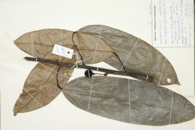

Images :



| Habit : | Trees , up to 18 m tall. |
| Leaves : | Leaves simple , alternate , distichous ; petioles 0.8-0.9 cm long; lamina 25-35 x 7-8 cm, oblong , apex short acuminate , base rounded , glabrous ; secondary_nerves 10-13 pairs, slender; tertiary_nerves reticulate . |
| Inflorescence / Flower : | Flowers cauliflorus , clustered below the leaf scars. |
| Fruit and Seed : | Cluster of berries , glabrous , many seeded . |